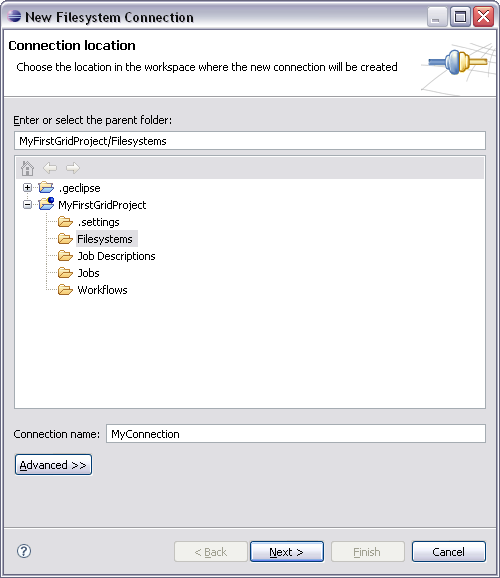
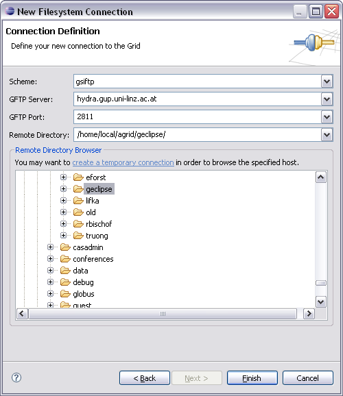
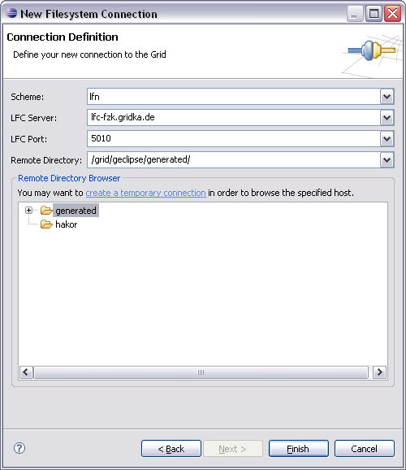
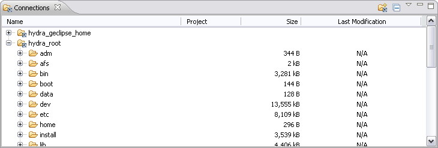
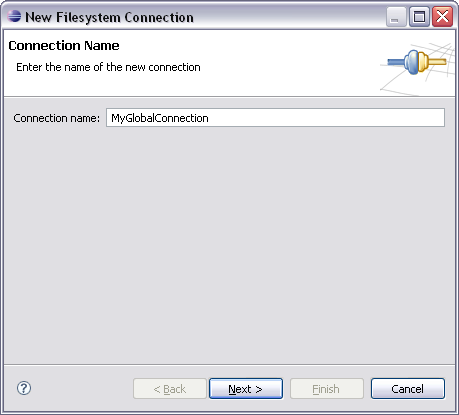

Connections in terms of g-Eclipse are meant to be links to local or remote file systems. Such connections are seemlessly integrated into the Grid model views. You can browse them, drag'n'drop data to or from them, create or delete files and folders. In fact the g-Eclipse connection management is based on EFS. That means that every EFS implementation is supported from scratch and can therefore be used to create connections.
Connections are divided into local and global connections. Local connections are located in the user's workspace and are therefore part of a project. Local connections can be created by the appropriate context menu action (see Local Connections). Global connections do not exist within a project and can therefore also be created without even having a project in your workspace (see Global Connections).
To create a new connection select the New -> Grid Connection action from the Grid project view's context menu or select File -> New -> Grid Connection. This will open the New Connection Wizard.

On the first page of the connection wizard you can choose the workspace location where your new connection should be created and the name of the new connection. After clicking Next you are directed to the second page of the connection wizard. Here you can choose a protocol for which you want to create a new connection. The controls of the second wizard page change with the protocol you select. For instance when selecting a GSIFTP connection the page looks like this:

Whereas for a LFN connection it looks slightly different:

The controls therefore depend on the connection type, i.e. the scheme you are selecting. Most often you will be asked for a host name, a host port and a path on that host. Concerning the remote path the connection wizard offers the opportunity to create a temporary connection to the specified host starting from the host's root directory. To do so just click create a temporary connection. Now you are able to browse the remote server and to select a directory you would like to connect to. When selecting a directory you may notice that the path field changes its value to the selected directory. If you finalized your settings just click Finish and the new connection will be created afterwards.
Global connection can be created from the connection view.

There you either choose New Connection from the context menu or click
the appropriate button
( )
in the views tool bar. This will open the New Connection Wizard. On the first
wizard page you are asked for a name for your new connection.
)
in the views tool bar. This will open the New Connection Wizard. On the first
wizard page you are asked for a name for your new connection.

When entering the name and clicking Next you will be directed to the second wizard page that is actually the same as for local connections.